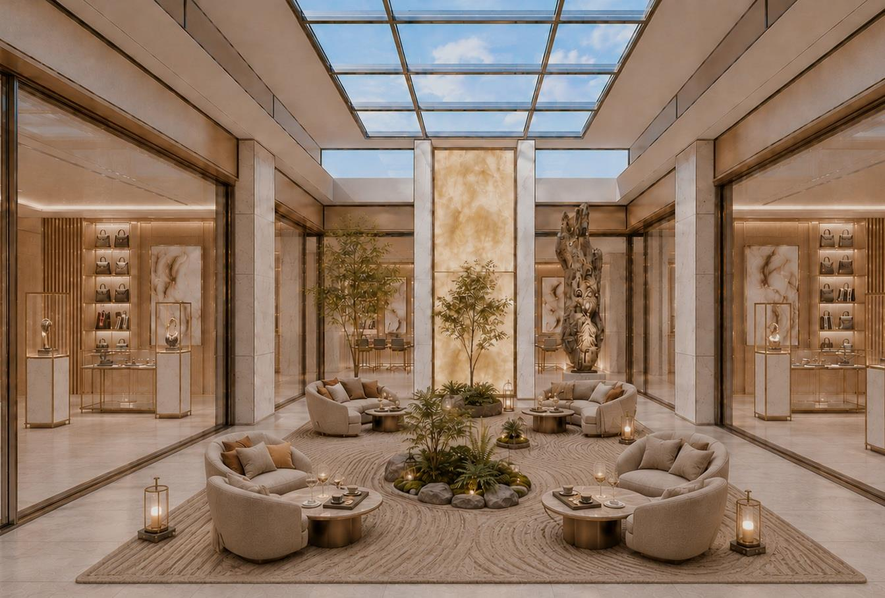
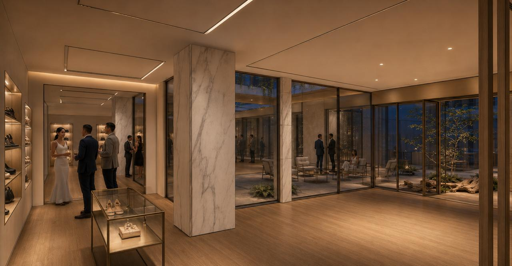
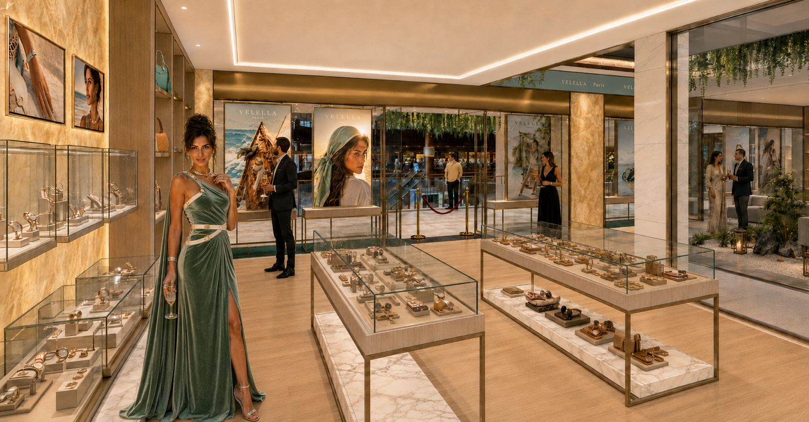
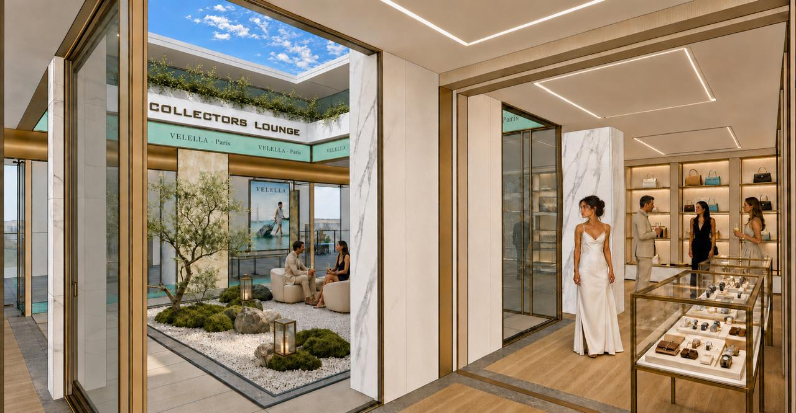
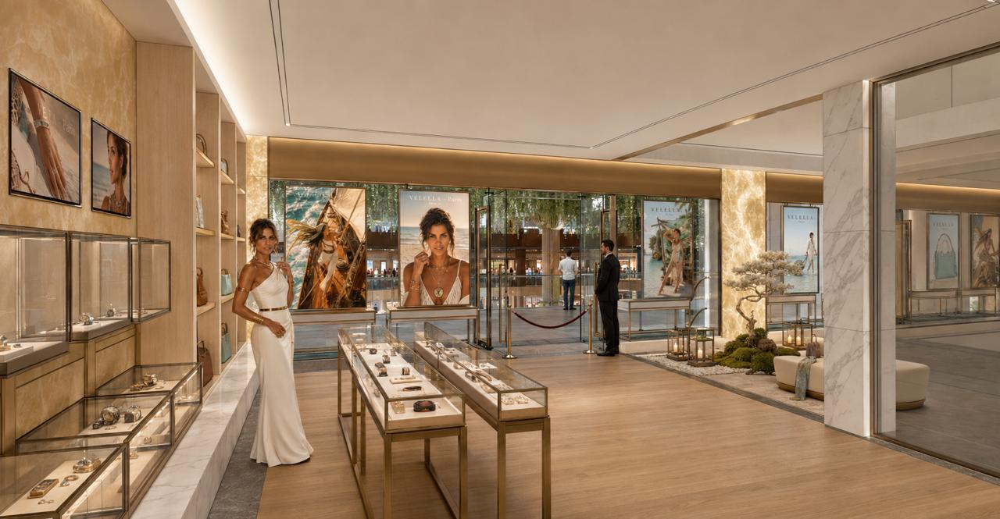
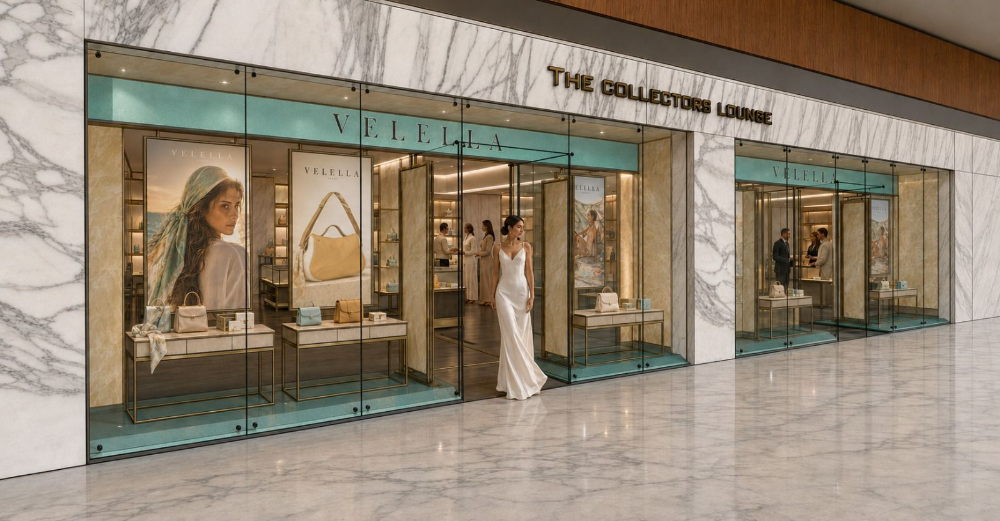
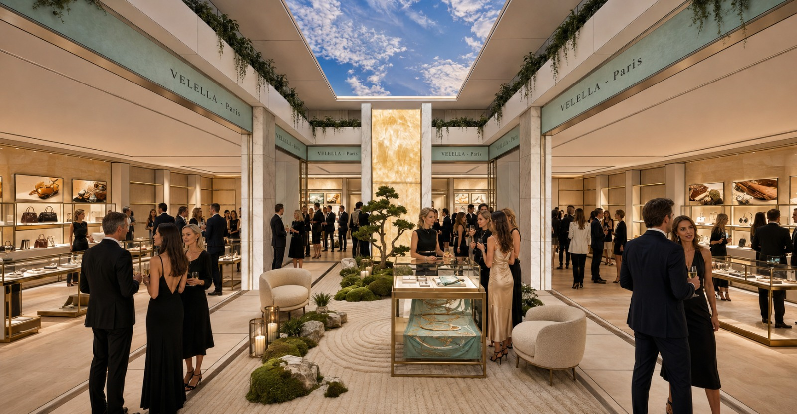
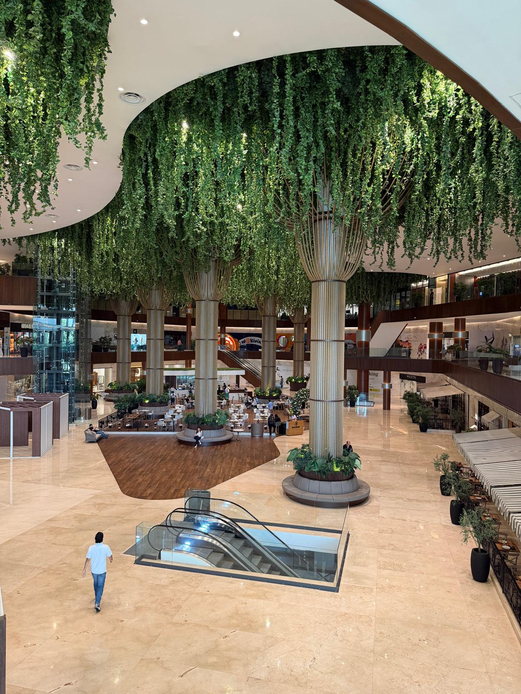
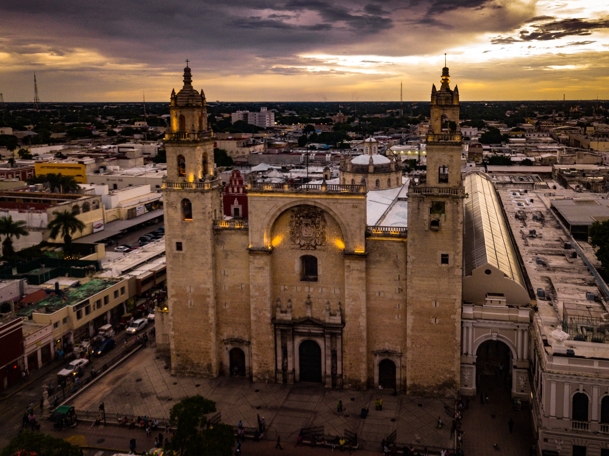

CITY 32 · MÉRIDA · MEXICO
The Collectors Lounge
Your private Maison in Mérida, Mexico.
A permanent address. A private showroom. An immersive environment. An invitation-only experience — without opening a boutique.
Discover the house →BRAND REPRESENTATION · PRIVATE HOSPITALITY · MARKET ENTRY
THE HOUSE
There is
another way.
For decades, luxury brands entering new markets have faced the same dilemma: open an expensive boutique, depend on a retailer, or remain invisible.
We believe there is another way. The Collectors Lounge gives a Maison its own universe in Mexico — without compromising its identity, without investing in a permanent boutique and without losing control of its story.
Your Maison. Your identity. Your collections. Your clients. Your experience.
THE SPACE
More than
a showroom.
A flexible environment designed for private experiences, brand activations and market entry — delivered ready to become your Maison.




Ready to become your Maison.
Furniture, display cases, lighting, screens, power, operational Wi-Fi and daily setup are part of the standard environment. Digital content and standard graphic customization can be adapted to the brand.
Hosted by a professional team.
A single-boutique activation includes one site manager, two host-advisors, shared security and daily cleaning. With both boutiques: one site manager, four host-advisors, adapted security and daily cleaning.
From private to full takeover.
The atrium and boutiques can move from private appointments to dinners, cocktails, launches and demonstrations. The dedicated 5 m² secure vault provides discreet storage for high-value pieces and collections. Formats range from intimate private salons to full takeovers for up to 80 guests.
Private appointments
Collector events
Press presentations
Product launches
VIP dinners
Brand storytelling
Retail testing
Market representation
Concierge services
Additional hospitality, enhanced security, VIP transport, concierge, scenography, audiovisual production, temporary secure storage and special logistics can be arranged according to the brief. The dedicated secure vault is available for discreet storage of high-value pieces and collections.
MORE THAN A SHOWROOM
One place.
Infinite identities.
The Collectors Lounge is not retail. It is a platform for market entry — a place where every Maison can establish its own universe.

Boutique & Events
Private appointments, collection presentations, launches, press moments, dinners and premium hospitality.
Enquire →Resident Brands
Build a recurring presence in Mérida with scheduled activations, priority access and a relationship with the local ecosystem.
Enquire →Mexico Extension
Use TCL as a local interface for market development, client reception, appointments, clienteling and coordinated after-sales support.
Enquire →BEYOND RETAIL
Luxury is not built
through transactions.
Luxury is built through relationships. The Lounge is designed for private presentations, collectors, journalists, family offices, architects and entrepreneurs — with access shaped around the Maison and the moment.
01CollectorsRarity · expertise · collectible objects
02Women & LuxuryFashion · jewellery · beauty · design
03Luxury LifestyleAutomotive · watches · travel · design
04Culture & CreativeArt · architecture · gastronomy
WATCHMAKING · JEWELLERY · FASHION · AUTOMOTIVE · ART & DESIGN · HOSPITALITY · BEAUTY & WELLNESS · COLLECTIBLES
THE EXPERIENCE
The visitor doesn't simply enter a showroom.
They enter your Maison.
Every detail is orchestrated. Every material. Every scent. Every sound. Every conversation. Every object.
From the entrance to the private lounge, the experience is designed to feel dedicated to the brand — not borrowed from someone else's retail environment.


CITY32 · MÉRIDA
The right address
for the right audience.
City32 places The Collectors Lounge inside one of Mérida's most distinctive mixed-use environments — where retail, gastronomy, lifestyle and contemporary architecture meet.
For a Maison entering Mexico, the location creates a natural bridge between an established premium environment and the relationships that matter: residents, travellers, collectors and international visitors. City32 also integrates a five-star hotel, giving Maisons a natural hospitality base for hosting and accommodating guests visiting Mérida.
A permanent address without the burden of a permanent boutique.

YOUR GATEWAY TO LATIN AMERICA
Mérida.
Mexico.
Mérida offers a distinctive setting where culture, architecture, gastronomy, hospitality and an increasingly sophisticated luxury audience meet.
The Collectors Lounge offers a simple way to test, establish and develop your presence — without opening a boutique, without recruiting a local team and without compromising your identity.
Mérida is our operational base — a discreet, premium address from which relationships can grow.
THE COLLECTORS LOUNGE
Every Maison deserves
its own stage.
Your identity. Your collections. Your clients. Your story. Your experience.
HOSTED BY TCL
Your Maison.
One partner.
The Collectors Lounge is operated by professionals dedicated to collectors, independent watchmaking and luxury experiences. Our ambition is simple: to become an elegant gateway between international Maisons and Mexico's most discerning audiences.
Brand representation, market entry, private events, collector access, press relations, content creation, photography, logistics, after-sales coordination and private concierge services can be built around the brief.
YOUR PRIVATE MAISON IN MEXICO
Without opening
a boutique.
For brand enquiries, private activations, residencies or Mexico market-entry conversations, contact the house directly.
Connect with usCITY 32 · MÉRIDA · MEXICO